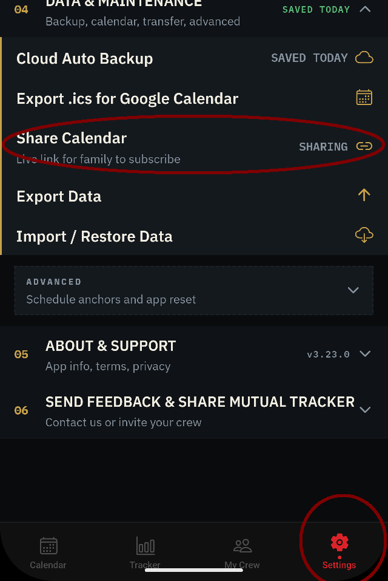
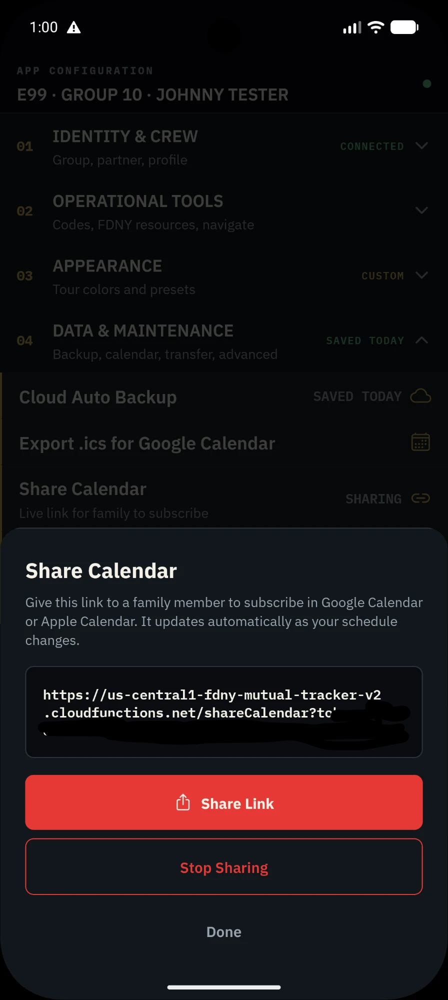
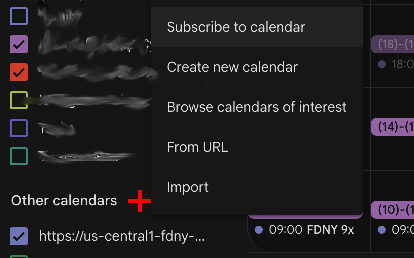
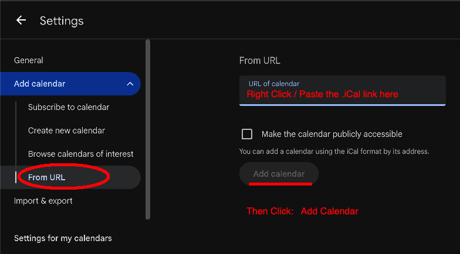
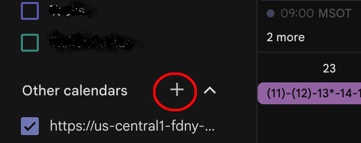

How to Share Your Calendar
Share your FDNY schedule with family members so they can subscribe to your calendar in Google Calendar, Apple Calendar, or Outlook.
Open Settings & Find Share Calendar
Open the FDNY Mutual Tracker app and tap Settings at the bottom. Scroll down to "Data & Maintenance" section and tap "Share Calendar".

Generate Your Share Link
Tap the "Generate New Link" button (or "Share Link" if you already have one). This creates a secure, shareable URL that family members can use to subscribe to your calendar.

Copy the Link
The share link will appear in a text box. Tap and hold to select the entire URL, then copy it. Your link is now ready to share with family members or anyone who needs to see your schedule.
Email this link to your family member that you want to share your schedule with.
Open Google Calendar
Go to calendar.google.com and sign in. Click the "+" button next to "Other calendars" on the left sidebar.

Subscribe to Calendar
Select "Subscribe to calendar" from the menu that appears.

Paste the Share Link
A dialog box will appear asking for a calendar URL. Paste the share link you copied from the FDNY Mutual Tracker app into the "URL of calendar" field.

Add the Calendar
Click "Add calendar". Google Calendar will now subscribe to your FDNY schedule and display it automatically.
Done!
Your calendar is now live in Google Calendar. Every time you update your schedule in the FDNY Mutual Tracker app (add tours, OT, mutual exchanges, etc.), the changes will sync automatically — no need to re-subscribe.
Revoke or Stop Sharing
If you no longer want to share your calendar, go back to Settings → Share Calendar and tap "Stop Sharing". The link will stop working immediately.